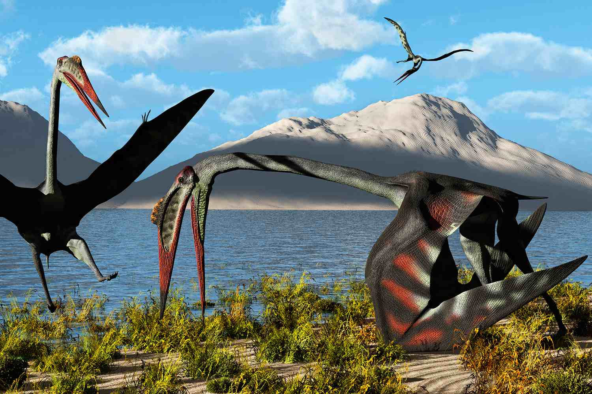

Quetzalcoatlus
Thần Rắn kỷ Phấn trắng
Tổng quan
Kỷ
Cretaceous
Họ
Azhdarchidae
Chi
Quetzalcoatlus
Cao
5 m
Sải cánh
10 m
Nặng
250 kg
Thức ăn


Quetzalcoatlus là một chi thằn lằn bay sống vào cuối kỷ Creta ở Bắc Mỹ là động vật bay lớn nhất cùng với Hatzegopteryx vì 2 loài này lớn ngang nhau, khi đứng thẳng chúng cao ngang hươu cao cổ. Quetzalcoatlus là thành viên của họ Azhdarchidae, một họ thằn lằn bay không răng có cổ dài.
Nguồn: wikipedia.org
Phân bố
Khu vực Bắc Mỹ

Thông tin thêm về Quetzalcoatlus
Kỷ nguyên
Quetzalcoatlus thuộc về một chi của họ Azhdarchidae, gồm các loài thằn lằn bay không răng có cổ dài, sống vào cuối kỷ Creta cách đây khoảng 68-65.5 triệu năm trước và bay cao trên những sinh vật nổi tiếng như Tyrannosaurus và Triceratops.
Phân bố
Quetzalcoatlus thống trị bầu trời Bắc Mỹ, được tìm thấy tại Hệ tầng Javelina thời đại Maastrichtian.
Tên khoa học
Được đặt tên bởi Douglas Lawson vào năm 1975. Tên chi được đặt theo vị thần rắn Mesoamerican Quetzalcoatl trong thần thoại Aztec. Hiện nay có hai loài Quetzalcoatlus đã được định danh là Quetzalcoatlus northropi và Quetzalcoatlus sp.
Kích thước
Với chiều cao 4.8-5.5 mét khi đứng thẳng, Quetzalcoatlus cao ngang hươu cao cổ. Trọng lượng khoảng từ 200 - 250 kg, là một trong số các loài sinh vật biết bay lớn nhất.
Các nhà khoa học ước tính Quetzalcoatlus có sải cánh vào khoảng 10 - 11 m, tương đương một chiếc máy bay du lịch cỡ nhỏ.
Ngoại hình
Dực long Quetzalcoatlus có một cái mỏ dài sắc nhọn, không có đầu móc, giống như một con cò hiện đại, với hộp sọ dài, phía sau đầu có một cái mào ngắn. Chúng có cổ rất dài, thân nhỏ, chân dài và một đôi cánh giống áo choàng, cân đối với cơ thể.
Ở trên mặt đất, Quetzalcoatlus sẽ xếp đôi cánh lại và di chuyển chủ yếu bằng hai chân sau. Khi đó, đôi cánh sẽ có vai trò như cái nạng chống, giúp chúng có được tư thế vững chãi trên mặt đất bằng phẳng cũng như vách núi.
Chế độ ăn
Dù có vẻ ngoài “khủng bố”, thằn lằn bay khổng lồ Quetzalcoatlus vô hại với hầu hết các loài khủng long khác do thức ăn của chúng chú yếu là cá, côn trùng và các động vật nhỏ.
Có thể chúng đã sải cánh bay lượn trên các bờ biển và hớt con mồi dưới nước bằng cái mỏ rộng như mỏ bồ nông, hoặc lang thang xung quanh các hồ nước đề tìm kiếm thức ăn như các loài cò, sếu ngày nay.
Khám phá
Các hóa thạch Quetzalcoatlus đầu tiên được phát hiện ở Texas (từ Hệ tầng Maastrichtian Javelina tại Công viên Quốc gia Big Bend) vào năm 1971 bởi sinh viên tốt nghiệp địa chất Douglas A. Lawson. Mẫu vật bao gồm một phần cánh (được tạo thành từ cẳng tay và ngón thứ tư thon dài ở loài thằn lằn bay).
Lawson vào năm 1975 đã công bố phát hiện này trong một bài báo trên tạp chí Science. Cùng năm đó, trong một bức thư tiếp theo gửi cho cùng một tạp chí, ông đã tạo ra mẫu vật lớn ban đầu, TMM 41450-3, mẫu gốc của một chi và loài mới, Quetzalcoatlus northropi.
Bí quyết bay của Quetzalcoatlus
Nhờ bộ xương có cấu trúc rỗng nên loài động vật này khả năng bay vút lên không và lượn rất giỏi. Với sải cánh kỷ lục đến hơn 10m, có lẽ Quetzalcoatlus phải cất cánh từ vách núi đá cao hoặc cần phải có “đường băng” để chạy đà trên mặt đất giống như một chiếc bay. Và việc hạ cánh của Quetzalcoatlus cũng đòi hỏi kỹ năng điêu luyện cũng như “đường băng” phù hợp, nếu không chúng sẽ bị thương khi tiếp đất.
Quetzalcoatlus có thể bay cao từ 3.000 - 4.500 mét với tốc độ khoảng 120 km một giờ. Như một chiếc tàu lượn, chúng sẽ tận dụng các luồng gió để tiết kiệm năng lượng cho cơ thể.
Sự tuyệt chủng
Nhiều khả năng Quetzalcoatlus chỉ là những con vật vụng về khi ở trên mặt đất. Chúng dễ dàng bị phục kích và trở thành mồi ngon cho những loài khủng long ăn thịt có trọng lượng lớn gấp nhiều lần.
Là một trong những sinh vật cuối cùng tồn tại trong kỷ nguyên khủng long, Quetzalcoatlus là nhân chứng trong sự kiện đẫn đến cuộc tuyệt chủng đẩy bí ẩn của các con vật khổng lồ. Chúng đã được ngắm nhìn sự kiện bi tráng này từ nơi cao nhất, nơi các loài vật khác thời đó không thể nào với tới.